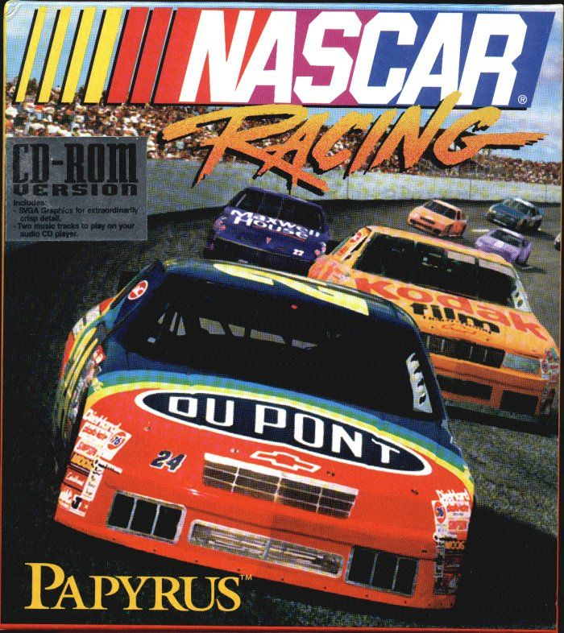
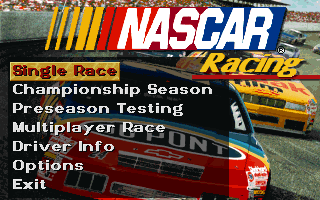
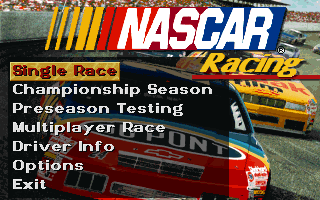

Play date: 1994
Developer: Papyrus
Publisher: Sierra
Memo: Lower graphics
Description: NASCAR Racing was released in the fall of 1994 for DOS personal computers. It featured more than 25 of the 40 regular drivers in the 1994 NASCAR Winston Cup season. Notable absences included Dale Earnhardt (who would go on to win the Winston Cup that year), Dale Jarrett, Kyle Petty and Darrell Waltrip, although the latter's brother, Michael, was included. The PlayStation version features 20 of the 39 regular drivers from the 1996 season.


 
